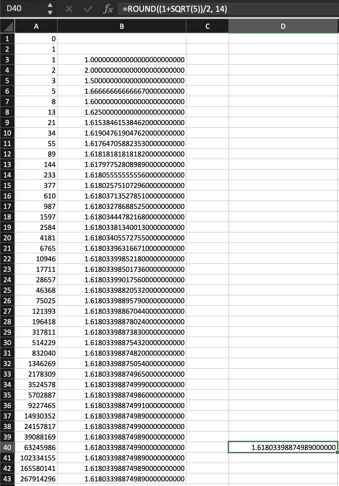

Kennneth's Homework due October 31st
-
Write fizzbuzz in javascript with the minimal possible number of characters.
Code golf - JavaScript FizzBuzz in 62 characters:
for(i=0;i++<100;console.log(i%5?j||i:j+"Buzz"))j=i%3?"":"Fizz"I got this code from the internets. It's confusing at first sight, but really interesting when you analyze it. Let's put in some whitespace:
for (i = 0; i++ < 100; console.log(i % 5 ? j || i : j + "Buzz")) { j = i % 3 ? "" : "Fizz"; }So, the loop iterates from 0 to 99 and increments
iby 1 in each iteration (i++). The condition ensures the loop runs as long asiis less than 100. It is surprising how the loop usesconsole.log()with a ternary operator inside as the conditional. As a last comment, I think the use ofjto print"FizzBuzz"when the number is evenly divisible by 3 and 5 is clever. -
Show us the Fibonacci numbers in Microsoft Excel; include the ratios of Fn/ Fn-1. Also calculate . Give a numbered list of steps used to create the spreadsheet that would be simple enough for a 5th grader to repeat. Explain every formula, every cell formatting choice, and include screenshots
Here's a screenshot of the spreadsheet:
 -
As we learned in the last homework, the Busy Beaver 6 Turing Machine writes approximately this many marks onto the tape:
10↑↑15 = 101010101010101010101010101010
Show the svg that has the precise number, and make sure that it displays nicely when the homework page is very narrow, and also be sure that it looks good in night mode.
-
Check this page using the W3C Validator. Write down some comments decribing what you learned.
-
Check this page using the WebAIM Web Accesibility Checker. Write down some comments decribing what you learned.
-
Speedrun Flexbox Froggy. Can you complete the whole thing if you time box it to four hours max? Once you've finished write down a few comments/observations. Did you learn anything new?
I managed to finish Flexbox Froggy in 15 minutes. The game is really fun and interesting. It helps people to get used with the
display:flexcss property. Some levels are really fun and interesting because you need to mix some properties to complete them. For example, there was one level where I had to flip the order of the froggies withflex-direction(because the were of different colors that matched the water lilies) and then withalign-itemsorjustify-contentI would make them go at the end withflex-end.It was a really fun game. The last level was really interesting because you had to mix not just two properties but four. There was one property that I had never used before and that is
flex-flow. Withflex-flowyou can set the direction and the wrapping in just one property. For instance, if you want to have a row and you want them to wrap in reverse order, you would normally doflex-direction: rowandflex-wrap: wrap-reverse; but you can do that withflex-flowsetting it toflex-flow: row wrap-reverse.All in all, I really had fun doing completing assignment!
-
Calculate 1597 ÷ 987 to 15 decimal places using long division (these are consecutive Fibonacci numbers). Here is a link that will show the first 12 decimal places; just extend the work a little farther: https://www.calculatorsoup.com/calculators/math/longdivisiondecimals.php?dvsor=987&dvdnd=1597&decimal_places=12&action=solve . Comment on your thoughts and observations regarding the HTML / CSS.
-
Show the Turing Machine instructions for Busy Beaver 5 (aka BB5). Write a few comments regarding what this one looks like while running as compared to what BB4 / BB3 / BB2 look like while running.
-
The Mandelbrot set is ... a set. It is exactly those points c in the complex plane that "don't spin off to infinity" when we repeatedly do the transformation z -> z^2 + c and we start with z=0. So when we draw or graph or depict this set it's a black region clustered around 0+0i. However, when we do an internet search for "Mandelbrot Set" we find all sorts of colorful drawings. Where do these colors come from? How are they designed? Explain and illustrate.
-
The book CSS Master by Tiffany Brown explains how CSS uses matrices to do transformations. Give an overview and some key examples of this concept.
{kind=link}